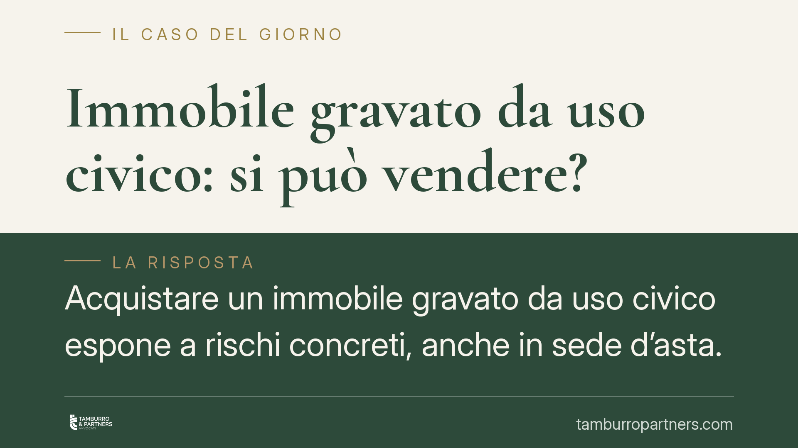

Immobile gravato da uso civico: si può vendere?
Acquistare un immobile gravato da uso civico espone a rischi concreti, anche in sede d'asta. La commerciabilità dipende da una distinzione dirimente: terreno privato semplicemente gravato oppure bene appartenente al demanio collettivo. La differenza decide se l'acquisto è valido o radicalmente inefficace. Vediamo come orientarsi, con attenzione agli effetti della vendita forzata.

Di cosa parliamo
L'uso civico è un diritto di godimento di natura collettiva, spettante agli abitanti di una comunità su determinati terreni (ad esempio pascolo, legnatico, semina). La sua esatta qualificazione dogmatica è dibattuta: la dottrina oscilla tra la figura del diritto reale e quella di una forma sui generis di appartenenza collettiva. Ciò che qui rileva, però, è l'effetto pratico: a seconda del regime applicabile, il bene può essere liberamente commerciabile oppure del tutto sottratto al mercato.
La materia è regolata dal R.D. 1766/1927 e, più di recente, dalla L. 168/2017, che ha riconosciuto i domini collettivi come ordinamento giuridico delle comunità originarie e ribadito il carattere di inalienabilità, inusucapibilità e inedificabilità dei beni collettivi.
La distinzione che decide tutto
Occorre distinguere due situazioni radicalmente diverse.
Terreno privato gravato da uso civico. Qui la proprietà è privata, ma su di essa insiste un diritto della collettività. Il bene è alienabile ed espropriabile, ma il vincolo segue il fondo: chi compra acquista un immobile il cui godimento è limitato dal diritto civico, salvo che sia intervenuta la liquidazione (affrancazione) del vincolo con pagamento di un canone. In questo caso l'uso civico è un peso che grava sul diritto trasferito.
Bene del demanio collettivo. Qui il terreno appartiene alla collettività. È inalienabile, inusucapibile e indisponibile. La vendita di un bene di questa categoria è nulla, perché ha a oggetto una cosa sottratta al commercio giuridico. Non esiste affrancazione che il privato possa invocare: il mutamento di destinazione segue procedure pubblicistiche specifiche.
La giurisprudenza costituzionale e di legittimità più recente ha ribadito con fermezza il carattere indisponibile dei beni di uso civico appartenenti al demanio collettivo, confermando che il vincolo non si estingue per il mero trasferimento né per il decorso del tempo.
Perché conta nelle aste giudiziarie
Qui si annida il rischio maggiore. La vendita forzata produce, ai sensi dell'art. 586 c.p.c., il cosiddetto effetto purgativo: il decreto di trasferimento cancella le ipoteche e i pignoramenti che gravavano sul bene. L'effetto, però, opera sui vincoli di natura privatistica a garanzia di crediti. Non tocca i vincoli di natura pubblicistica e, a maggior ragione, non può rendere commerciabile ciò che per legge è incommerciabile.
Ne deriva una conseguenza netta: se in asta viene aggiudicato un bene del demanio collettivo, l'aggiudicazione non sana l'incommerciabilità. L'acquisto resta esposto a inefficacia, con il rischio che l'aggiudicatario paghi un prezzo per un bene che non entra validamente nel suo patrimonio.
Il ruolo di perito e notaio
Due figure sono decisive per intercettare il problema prima che diventi un contenzioso.
Il perito stimatore, nelle aste, deve verificare la presenza di vincoli civici e darne conto nella relazione di stima. Un'omissione o un'imprecisione su questo punto incide direttamente sulla consapevolezza dell'offerente.
Il notaio, nella compravendita ordinaria, è tenuto alla verifica della provenienza e dei vincoli. L'emersione di un uso civico non dichiarato può integrare profili di responsabilità e giustifica rimedi a tutela dell'acquirente.
I rimedi per l'acquirente nella vendita ordinaria
Nella compravendita tra privati, se il bene risulta gravato da un vincolo non dichiarato, l'acquirente dispone di tutele.
L'art. 1482 c.c. disciplina la vendita di cosa gravata da oneri o diritti di godimento di terzi: l'acquirente che ignorava il vincolo può ottenere la risoluzione del contratto e il risarcimento. Qualora il venditore abbia taciuto consapevolmente il vincolo per indurre alla stipula, può venire in rilievo anche il dolo ex art. 1439 c.c., con possibilità di annullamento del contratto.
Cosa fare in concreto
- Richiedi la verifica civica presso il Comune e l'ufficio regionale competente, chiedendo l'inquadramento del bene: terreno privato gravato o demanio collettivo.
- Esamina l'eventuale affrancazione: accerta se il vincolo è stato liquidato e se esiste titolo che lo attesti.
- Nelle aste, leggi la perizia nella parte sui vincoli e, in caso di dubbio o silenzio, sospendi la decisione di offrire.
- Conserva ogni documento che provi la mancata informazione da parte del venditore, utile ai fini dei rimedi contrattuali.
- È opportuno far esaminare la documentazione a un legale prima della firma o della partecipazione all'asta.
Disclaimer
Contributo informativo a cura di Tamburro & Partners - Avv. Giuseppe Tamburro. Non costituisce parere legale.
Comprare bene all’asta si può.
Se vuoi acquistare un immobile all’asta in sicurezza o difendere un esecutato, scrivi allo studio. Ti rispondiamo entro un giorno lavorativo.